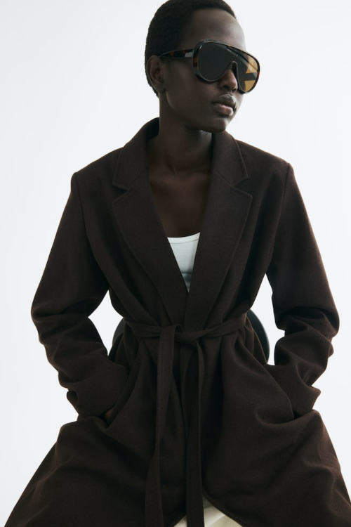
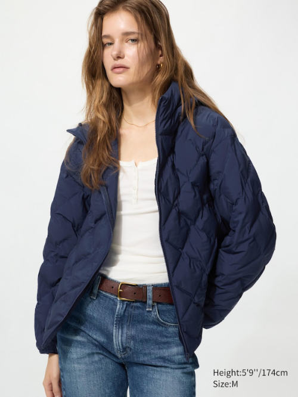
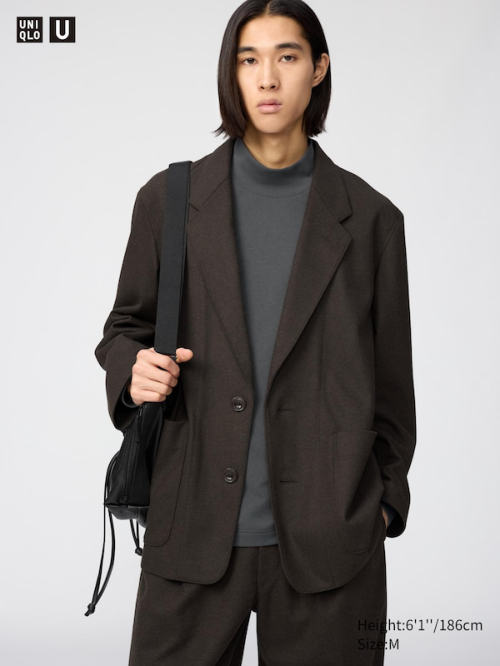
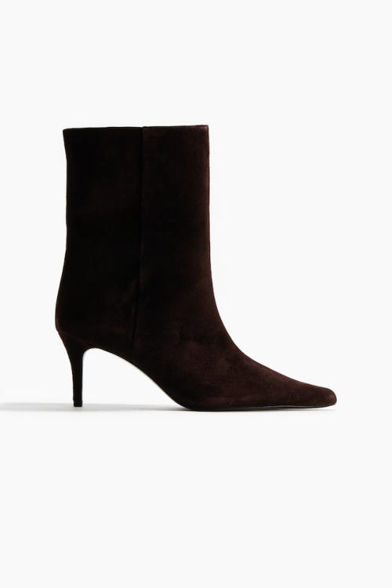
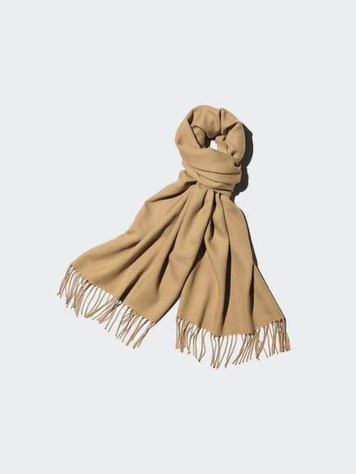
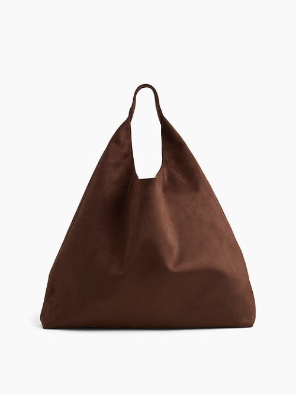
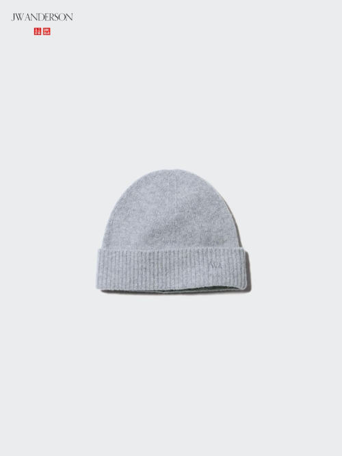

Cheaper swap
H&M Tie-Belt Coat, Dark Brown, $59.99, 100% polyester, fully lined, with a removable tie belt. Want wool for less? Quince Wool Cashmere Cocoon Coat, $175, 90% wool + 10% cashmere.
Shop the swap →Shop the Cocoon Coat →
The live companion to your capsule guide: today's prices, stock, and a shop link for every piece and every cheaper swap
Prices and stock checked October 20-22, 2026

H&M Tie-Belt Coat, Dark Brown, $59.99, 100% polyester, fully lined, with a removable tie belt. Want wool for less? Quince Wool Cashmere Cocoon Coat, $175, 90% wool + 10% cashmere.
Shop the swap →Shop the Cocoon Coat →


None needed. Uniqlo's 100% merino sweater costs the same, $49.90.



Uniqlo Jersey Tailored Jacket, $49.90, polyester-cotton-rayon. It holds its shape, but it is not wool.
Shop the swap →


Not worth it. Uniqlo's Pleated Skirt costs $59.90 and is 69% polyester, 29% rayon. Ours is 94% merino for $20 more.


Also in Brown Grey Glen Plaid, same price Shop →


H&M Heeled Leather Boots, Dark Brown, $109, 100% sheep suede upper. A different shape: ankle height, pointed toe, slim heel. Need a steady block heel? H&M Knee-High Boots, Dark Brown, $79.99, faux leather.
Shop the swap →Shop the block-heel boots →





Gap Factory Slouchy Vegan-Suede Tote, Chocolate, $59.99 (often on sale; $29.99 on October 22), 100% polyester faux suede. We found no real-leather tote under $80.
Shop the swap →



Outfit photos are AI-generated to show how the pieces work together. Product photos belong to the stores
| Sounds expensive | What's inside | Price | Real thing instead |
|---|---|---|---|
| Uniqlo Souffle Yarn Sweater | 8% wool, 58% acrylic | $49.90 | Quince cashmere crewneck, 100% cashmere, $50 ↑ |
| Gap "CashSoft" Crew | no cashmere: cotton, nylon, acrylic | $69.95 | Quince cashmere turtleneck, $89.90 ↑ |
| Quince "Cotton Cashmere" Crew (a best-seller) | 3% cashmere | $29.90 | Quince cashmere crewneck, $50 ↑ |
| Gap Factory Relaxed Wrap Topcoat (a best-seller) | 100% polyester | $74.99 on sale | Quince merino wrap coat, 100% wool, $200 ↑ |
| Gap "Wool-Blend" Peacoat | 31% wool, 65% polyester | $198 | Quince merino wrap coat, $200 ↑ |
| Uniqlo Double Face Relaxed Long Coat | 33% wool | $149.90 | Quince Cocoon Coat, 90% wool + 10% cashmere, $175 ↑ |
| H&M Wool-Blend Pea Coat | 2% wool, 98% polyester | $69.99 | H&M Tie-Belt Coat, honest 100% polyester, $59.99 ↑ |
| H&M Wool-Blend Coat | 25% wool, 70% polyester | $79.99 | Quince Cocoon Coat, 90% wool + 10% cashmere, $175 ↑ |
| H&M "Handmade" Double-Breasted Coat | 100% polyester | $89.99 | H&M Tie-Belt Coat, same fabric, $59.99 ↑ |
October 20-22, 2026. First version of the live page. We re-check prices and stock every few weeks through March and note every change here